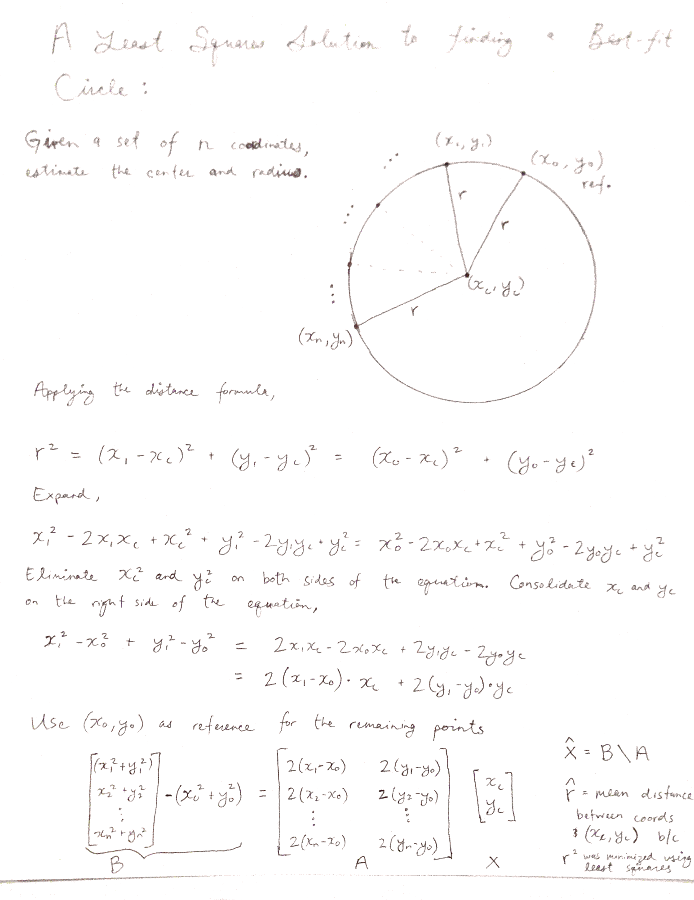

Estimate the center and radius of circle with >2 points on the perimeter
The center of a circle and its radius can be estimated using at least 3 points on the perimeter.
Why was this function created? Aligning the center of a dish with an objective can be challenging by eye. It is easier to identify the perimeter at the plastic-glass interface of a Mattek dish through and objective and then calculating the circle center from this information.
Contents
Inputs
- perimdata = an array of paired coordinates that is n x 2.
Outputs
- xc = the center x coordinate
- yc = the center y coordinate
- r = the radius of the circle
function [xc,yc,r] = SCAN6config_estimateCircle(perimdata)
if size(perimdata,1)<3 warning('SCAN6cng_estCir:NotEnoughPts','The input array of (x,y) coordinates did not contain enough data points to make an estimate.'); [xc,yc,r] = deal(NaN); return end x0 = perimdata(1,1); y0 = perimdata(1,2); xn = perimdata(2:end,1); yn = perimdata(2:end,2);
Not enough input arguments. Error in SCAN6config_estimateCircle (line 16) if size(perimdata,1)<3
Proofread the data points
- data points should not be identical with the first value.
- there is a singularity if the y-value of the first point is the same as the y-value of an nth point. This must also be avoided.
- the "coeffx" should not be too large and bias the estimate
testnumx = xn-x0; testnumy = yn-y0; testsumchk = testnumx+testnumy ~= 0; if ~all(testsumchk) warning('SCAN6cng_estCir:firstValRedundant','The first pair of points in the input array of (x,y) coordinates is identical to another pair of points in the array.'); [xc,yc,r] = deal(NaN); return end if ~all(testnumy) warning('SCAN6cng_estCir:firstValYRedundant','The first y-value in the input array of (x,y) coordinates is identical to another y-value in the array.'); [xc,yc,r] = deal(NaN); return end
Calculate the estimate for the center and radius

B = sum(perimdata(2:end,:).^2,2)-sum(perimdata(1,:).^2,2); A = 2*(perimdata(2:end,:)-repmat(perimdata(1,:),size(perimdata,1)-1,1)); mylstsq = A\B; xc = mylstsq(1); yc = mylstsq(2); r = (perimdata(:,1)-xc).^2 + (perimdata(:,2)-yc).^2; r = sqrt(mean(r));